在第 1 章、IT 机器学习、中，我们通过查看理论背后的基本步骤，了解了什么是 IT 异常检测。最重要的是，我们了解到，由于弹性堆栈，弹性机器学习 ( ML )允许我们操作异常检测，从分析到可视化。现在，在这一章中，我们将卷起袖子，开始安装整个弹性堆栈。通过这样做，我们将对弹性 ML 的解剖有更好的理解。在本章中，我们将讨论以下主题:
安装弹性堆栈是一个非常简单的过程。我们首先需要下载并安装 Elasticsearch 和 Kibana。安装后，有一些配置是完全启用弹性 ML 所必需的。
弹性软件可以从https://elastic.co/guide下载。在本书中，我们将使用 6.5 版，这是撰写本文时的最新版本。显然，在你读这本书的时候，有可能存在一个更新的版本——记住这一点。软件可以变化很快！
要下载 Elasticsearch，请浏览https://www.elastic.co/downloads/elasticsearch，并选择合适的下载发行版。对 https://www.elastic.co/downloads/kibana 的基巴纳做同样的事情。
下载完成后，我们就可以开始安装过程了。
除了下载软件，你还可以在 http://cloud.elastic.co 申请免费试用。
如果您像我们一样下载了 TAR 文件，那么从提取文件系统上的内容开始(其中x、y和z是当前的版本号):
tar -xvf elasticsearch-x.y.z.tar.gz
否则，如果您喜欢使用其他类型的安装，您可以参考安装文档，网址为https://www . elastic . co/guide/en/elastic search/reference/current/_ installation . html。
解压后，使用您最喜欢的终端工具进入解压文件夹，运行以下命令启动 Elasticsearch:
cd elasticsearch-x.y.z/bin ./elasticsearch
Elasticsearch 将启动一个空集群，默认配置位于安装目录的config文件夹中，如下例所示:
%> pwd
/Users/yourusername/elasticsearch-6.5.1
%> ls -lF
total 848
-rw-r--r--@ 1 yourusername staff 13675 Nov 15 21:20 LICENSE.txt
-rw-r--r--@ 1 yourusername staff 403816 Nov 15 21:26 NOTICE.txt
-rw-r--r--@ 1 yourusername staff 8519 Nov 15 21:19 README.textile
drwxr-xr-x@ 45 yourusername staff 1440 Nov 15 21:26 bin/
drwxr-xr-x@ 9 yourusername staff 288 Nov 15 21:26 config/
drwxr-xr-x@ 42 yourusername staff 1344 Nov 15 21:26 lib/
drwxr-xr-x@ 2 yourusername staff 64 Nov 15 21:26 logs/
drwxr-xr-x@ 28 yourusername staff 896 Nov 15 21:26 modules/
drwxr-xr-x@ 2 yourusername staff 64 Nov 15 21:26 plugins/
为了简单起见，我们不会对 Elasticsearch 的配置做任何改变，我们将只使用单节点集群安装。
当 Elasticsearch 启动时，您应该会在控制台中看到类似下面的日志:
%> bin/elasticsearch
[2018-11-25T09:12:51,181][INFO ][o.e.e.NodeEnvironment ] [1RGCSTv] using [1] data paths, mounts [[/ (/dev/disk1s1)]], net usable_space [47.1gb], net total_space [233.4gb], types [apfs]
[2018-11-25T09:12:51,183][INFO ][o.e.e.NodeEnvironment ] [1RGCSTv] heap size [990.7mb], compressed ordinary object pointers [true]
[2018-11-25T09:12:51,187][INFO ][o.e.n.Node ] [1RGCSTv] node name derived from node ID [1RGCSTvXQZODVPq8gp2LUw]; set [node.name] to override
[2018-11-25T09:12:51,187][INFO ][o.e.n.Node ] [1RGCSTv] version[6.5.1], pid[22781], build[default/tar/8c58350/2018-11-16T02:22:42.182257Z], OS[Mac OS X/10.14.1/x86_64], JVM[Oracle Corporation/Java HotSpot(TM) 64-Bit Server VM/1.8.0_171/25.171-b11]
[2018-11-25T09:12:51,188][INFO ][o.e.n.Node ] [1RGCSTv] JVM arguments [-Xms1g, -Xmx1g, -XX:+UseConcMarkSweepGC, -XX:CMSInitiatingOccupancyFraction=75, -XX:+UseCMSInitiatingOccupancyOnly, -XX:+AlwaysPreTouch, -Xss1m, -Djava.awt.headless=true, -Dfile.encoding=UTF-8, -Djna.nosys=true, -XX:-OmitStackTraceInFastThrow, -Dio.netty.noUnsafe=true, -Dio.netty.noKeySetOptimization=true, -Dio.netty.recycler.maxCapacityPerThread=0, -Dlog4j.shutdownHookEnabled=false, -Dlog4j2.disable.jmx=true, -Djava.io.tmpdir=/var/folders/df/g2gdg5r509d49mv0t7mnft8h0000gn/T/elasticsearch.yNPajKl3, -XX:+HeapDumpOnOutOfMemoryError, -XX:HeapDumpPath=data, -XX:ErrorFile=logs/hs_err_pid%p.log, -XX:+PrintGCDetails, -XX:+PrintGCDateStamps, -XX:+PrintTenuringDistribution, -XX:+PrintGCApplicationStoppedTime, -Xloggc:logs/gc.log, -XX:+UseGCLogFileRotation, -XX:NumberOfGCLogFiles=32, -XX:GCLogFileSize=64m, -Des.path.home=/Users/yourusername/elastic/v6.5/elasticsearch-6.5.1, -Des.path.conf=/Users/yourusername/elastic/v6.5/elasticsearch-6.5.1/config, -Des.distribution.flavor=default, -Des.distribution.type=tar]
...
[2018-11-25T09:13:04,168][INFO ][o.e.l.LicenseService ] [1RGCSTv] license [f33e8be3-7742-4390-80dd-35275611de75] mode [basic] - valid
我们可以看到，该节点已经正确启动，绑定到了9200端口，并且已经申请了一个basic类型的许可证，该许可证是有效的。从这里开始，检查 Elasticsearch 是否正常运行的最简单的方法就是通过 API 进行检查。在 Linux/macOS X 命令行上，您可以调用以下命令:
%> curl -X GET "localhost:9200/"
{
"name" : "1RGCSTv",
"cluster_name" : "elasticsearch",
"cluster_uuid" : "xV8D0pBdSUS-lLU2OLYmlg",
"version" : {
"number" : "6.5.1",
"build_flavor" : "default",
"build_type" : "tar",
"build_hash" : "8c58350",
"build_date" : "2018-11-16T02:22:42.182257Z",
"build_snapshot" : false,
"lucene_version" : "7.5.0",
"minimum_wire_compatibility_version" : "5.6.0",
"minimum_index_compatibility_version" : "5.0.0"
},
"tagline" : "You Know, for Search"
}
或者，您可以直接在您最喜欢的浏览器中加载 URL，或者如果您使用的是 Windows，也可以使用 PowerShell。不管平台如何，Elasticsearch 都给出相同的基本信息——为请求提供服务的节点的名称(这里称为1RGCSTv)，以及正在运行的 Elasticsearch 的版本(这里称为6.5.1)。
Kibana 的安装过程和 Elasticsearch 一样简单，如果您使用的是 macOS 的 TAR，解压如下所示的档案:
tar -xvf kibana-x.y.z-darwin-x86_64.tar.gz
也可以在这里参考安装过程文档:https://www . elastic . co/guide/en/ki Bana/current/install . html .
由于我们之前安装的 Elasticsearch 集群使用默认配置，我们不需要更改 Kibana 配置，所以我们只需要进入安装文件夹并运行以下命令:
cd kibana-x.y.z-darwin-x86_64/ bin/kibana
这将产生如下所示的输出:
%> bin/kibana
log [14:27:00.947] [info][status][plugin:kibana@6.5.1] Status changed from uninitialized to green - Ready
log [14:27:01.026] [info][status][plugin:elasticsearch@6.5.1] Status changed from uninitialized to yellow - Waiting for Elasticsearch
...
log [14:27:08.057] [info][migrations] Finished in 1027ms.
log [14:27:08.059] [info][listening] Server running at http://localhost:5601
log [14:27:08.300] [info][status][plugin:spaces@6.5.1] Status changed from yellow to green - Ready
重要的是最后两行——您可以看到 Kibana 服务器在5601端口上正常运行(状态为green)。为了直观地检查 Kibana 是否正常运行，连接到http://localhost:5601/status并查看是否出现以下状态屏幕:
这显示了 Kibana 的状态(这里是绿色的)和每个核心插件的状态——包括连接到 Elasticsearch 的插件和 ML 需要的插件。
现在，我们已经有了一个正在运行的 Elasticsearch 和 Kibana 安装，它还启用了基本的特性集。这些基本功能(在此描述:【https://elastic.co/subscriptions】)是增值功能，在开源版本或第三方服务(如亚马逊 Elasticsearch 服务)版本的基础上增强了 Elastic Stack 的操作和功能。
然而，白金级功能提供了更多的企业级功能，例如:
白金功能可以通过启用试用许可证进行开箱评估。在 Kibana 中，点击管理，然后点击 Elasticsearch 部分中的许可证管理，以显示可以启用试用许可证的位置:
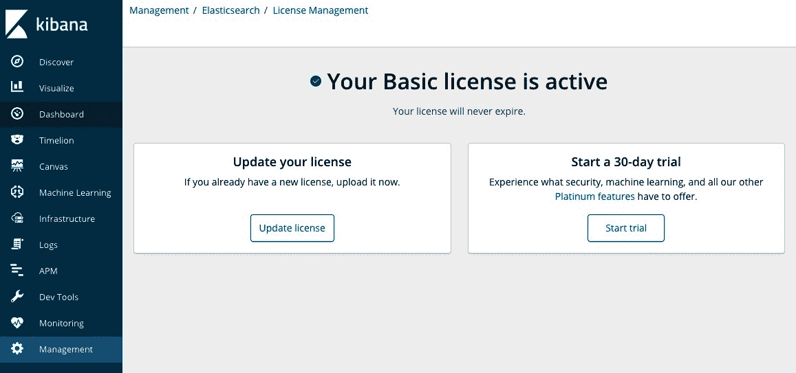
只需单击开始试用按钮即可启用 ML 和其他白金功能，并同意许可条款和条件:
完成后，许可屏幕将显示您正在试用白金功能:
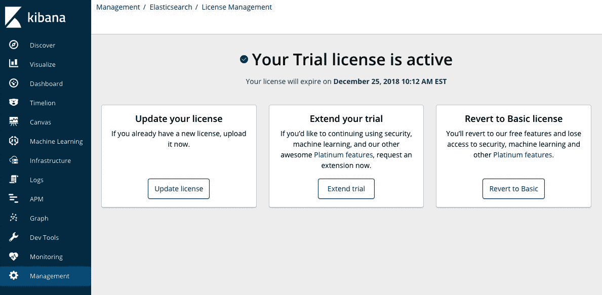
一个敏锐的观察者会注意到，在启用trial许可时，Elasticsearch 日志文件中会打印出以下几行:
[2018-11-25T10:12:13,175][INFO ][o.e.l.LicenseService ] [1RGCSTv] license [c1300014-2522-41cb-a0f3-7c5a2bd17f36] mode [trial] - valid
Kibana 日志中也有类似的消息:
log [15:12:13.230] [info][license][xpack] Imported changed license information from Elasticsearch for the [data] cluster: mode: trial | status: active | expiry date: 2018-12-25T10:12:13-05:00
log [15:12:13.231] [info][kibana-monitoring][monitoring-ui] Starting monitoring stats collection
log [15:12:38.937] [info][license][xpack] Imported changed license information from Elasticsearch for the [monitoring] cluster: mode: trial | status: active | expiry date: 2018-12-25T10:12:13-05:00
一旦这样做了，你就可以马上开始使用弹性 ML 了。要利用其他白金功能(如安全性和监控)，还需要额外的配置步骤，但这些步骤超出了本书的范围。有关配置这些特性的更多帮助，请参考 Elastic 文档。
既然我们已经启用了 Elastic ML，我们将利用本章的剩余部分，通过使用 Metricbeat(它收集系统性能指标并将其发送到 Elasticsearch)收集的数据，作为一种帮助我们展示一些用例的机制，来粗略地概述 ML 功能。我们将通过用于 ML 的 Kibana 插件创建各种 ML 分析作业，还将学习如何通过其 API 与 ML 交互。
如果没有 Elasticsearch 中的数据来分析，ML 并不是很令人兴奋。所以，让我们用 Metricbeat 得到一些！Metricbeat 易于安装和配置。它是原始遥测数据的重要来源，非常适合 ML。继续——我们假设您尚未安装 Metricbeat，因此我们现在可以一起安装。
从这个页面下载 Metricbeat 开始:https://www.elastic.co/downloads/beats/metricbeat。我们将在 macOS X 上运行安装，但如果您想在不同的平台上安装，请参考安装文档，网址为https://www . elastic . co/guide/en/beats/metric beat/current/metric beat-installation . html。
将 Metricbeat 提取到您选择的目录后，您会注意到以下文件夹结构:
Metricbeat 使用模块收集指标。每个模块都定义了从特定服务(如 Redis 或 MySQL)收集数据的基本逻辑。模块由读取和构造数据的矩阵集组成。这些模块的定义在modules.d子目录中。默认情况下，只有system模块被启用——这足以让我们用作 ML 的示例数据。但是 Metricbeat 收集的各种数据都可以用 ML 进行分析。
%> ls -lF
total 102296
-rw-r--r--@ 1 yourusername staff 13675 Nov 15 20:24 LICENSE.txt
-rw-r--r--@ 1 yourusername staff 163067 Nov 15 20:24 NOTICE.txt
-rw-r--r--@ 1 yourusername staff 808 Nov 15 20:39 README.md
-rw-r--r--@ 1 yourusername staff 373373 Nov 15 20:35 fields.yml
drwxr-xr-x@ 4 yourusername staff 128 Nov 15 20:35 kibana/
-rwxr-xr-x@ 1 yourusername staff 51739288 Nov 15 20:39 metricbeat*
-rw-r--r--@ 1 yourusername staff 61538 Nov 15 20:35 metricbeat.reference.yml
-rw-------@ 1 yourusername staff 5549 Nov 15 20:35 metricbeat.yml
drwxr-xr-x@ 37 yourusername staff 1184 Nov 15 20:35 modules.d/
因为 Metricbeat 的默认配置是我们开始所需的一切(并且因为我们还没有完全启用其他白金功能，如安全性，这需要 Metricbeat 知道如何通过 Elasticsearch 进行身份验证，我们可以简单地使用此默认配置启动 Metricbeat:
启动 Metricbeat 后，转到 Kibana DevTools 控制台(http://localhost:5601/app/kibana#/d ev_tools/console)以检查是否可以在预期的metricbeat索引中找到新索引的数据。在控制台中，执行以下命令:
%> ./metricbeat
After starting Metricbeat, go to the Kibana DevTools console (http://localhost:5601/app/kibana#/d ev_tools/console) in order to check whether newly indexed data can be found in the expected metricbeat index. In the console, execute the following command:
GET _cat/indices/metricbeat*
这利用了_cat/indices API 来显示可能存在于您的 Elasticsearch 集群中的任何metricbeat索引的摘要信息。如果像我一样，在启动 Metricbeat 后不久执行了这个命令，那么在一个索引中只会有少量的文档，这些文档的名称会附加上索引的创建日期。在我们的示例设置中，前面调用的返回如下:
我们可以看到，我们新创建的metricbeat索引包含了930文档。
yellow open metricbeat-6.5.1-2018.11.25 k4tKS42hSJCER9kV8wkP4g 1 1 930 0 532.9kb 532.9kb
在我们继续之前，最后一件事是，我们需要创建一个 Kibana 索引模式，以便在 Kibana 中可视化和使用 Metricbeat 数据。在 Kibana 的管理部分，单击索引模式链接。
同样，如果您按照我们记录的安装顺序，完全从零开始，您还不会有任何 Kibana 索引模式。因此，您将立即获得以下屏幕截图:
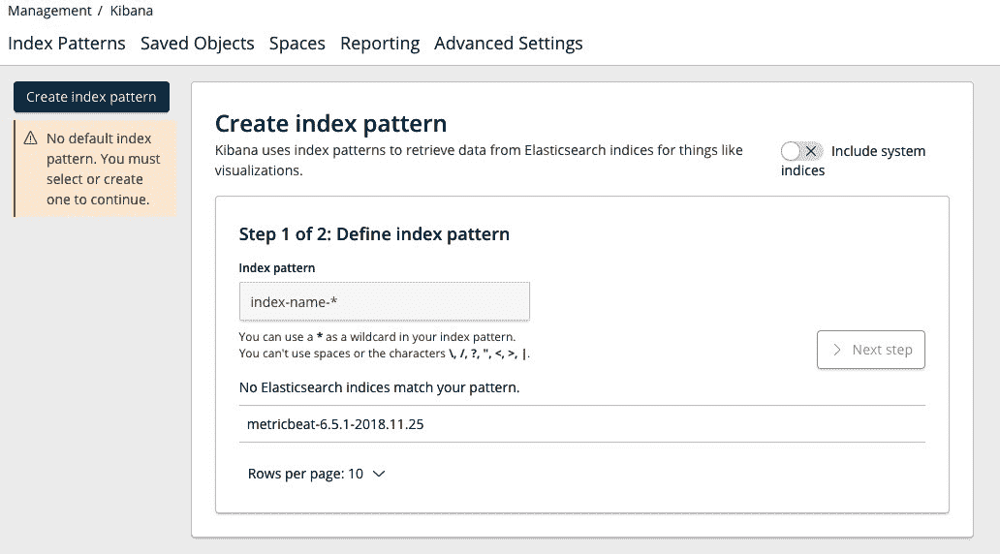
通过定义一个对索引名的可变部分使用通配符的模式，为当前的metricbeat-*索引(以及将来创建的索引)创建一个索引模式:
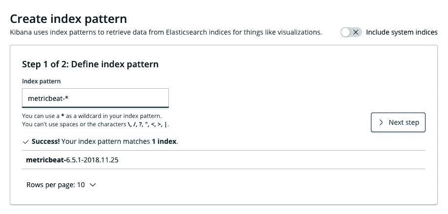
点击下一步后，输入@timestamp作为时间过滤器字段名称:
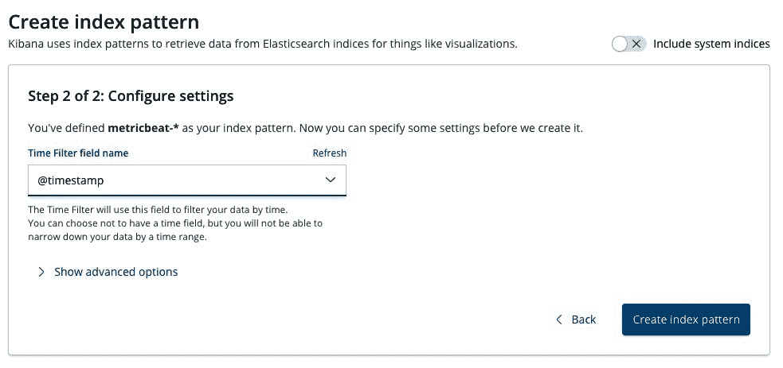
然后单击创建索引模式查看完整的索引模式定义:
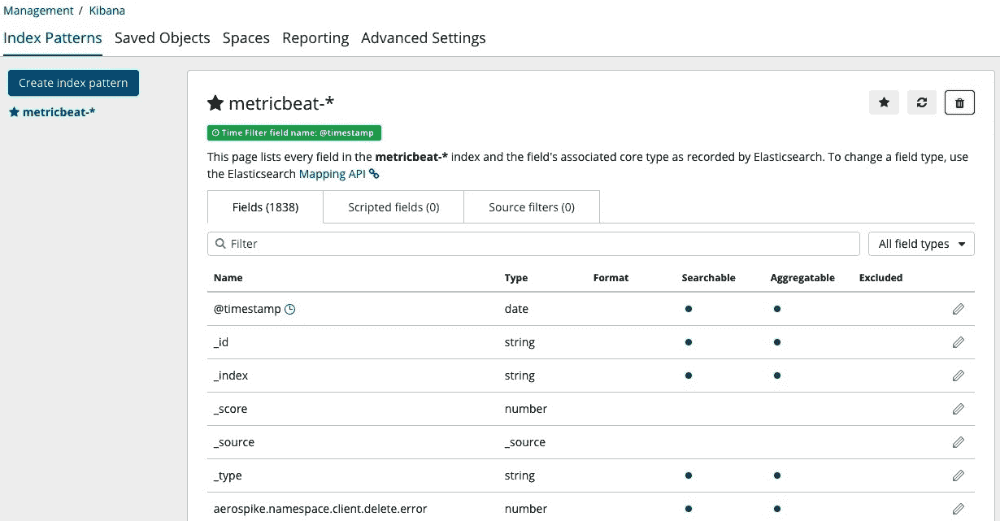
注意，索引模式的创建包括 1，800 多个字段的定义——其中大部分没有被收集，因为我们只启用了系统模块。然而，这个事实不会影响 ML 分析填充在某些字段中的数据的能力。
由于 Metricbeat 在后台运行，我们现在有了一个不断将数据推送到集群的流程。这为我们本章的 ML 演练打下了基础。应该注意的是，在继续之前，您应该让 Metricbeat 运行至少几个小时，如果不是更长的话，以便有大量的数据供 ML 处理。
With Metricbeat running in the background, we now have a process that continuously pushes data to our cluster. This lays the groundwork on which we will rely for the ML walk-through in this chapter. It should be noted that you should let Metricbeat run for at least a few hours, if not longer, before proceeding so that there’s a good amount of data for ML to work with.
基巴纳的 ML 工作类型
创建作业有不同的方法，可以通过 UI 或 API。后者将在本章后面讨论，我们将在这里集中讨论 UI 方法。在 Kibana 中，在左侧菜单中，您会看到一个用于访问机器学习的按钮。点击它会将您带到作业管理页面(您应该还没有任何作业):
UI 中还有其他选项卡(即异常浏览器和单一指标查看器选项卡)，但我们将在创建一些作业后讨论这些选项卡。如果您单击+创建新职务按钮，您将获得以下选择:
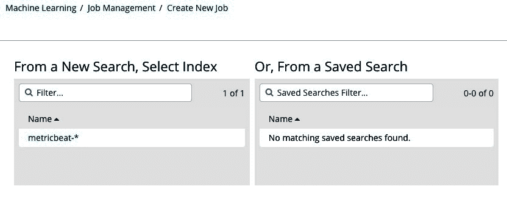
这是在问应该考虑哪些数据进行分析。在左侧，我们可以选择 ML 作业应该分析的原始数据的索引。目前，这假定不需要对数据进行特殊的搜索或过滤。如果我们已经在 Kibana 中创建了一个保存的搜索，它使用特定的标准过滤索引中的数据，那么这些保存的搜索的名称将显示在右侧。因为我们还没有创建任何模式，所以让我们点击并选择metricbeat-*索引模式。
以下屏幕截图显示了可用的选项:
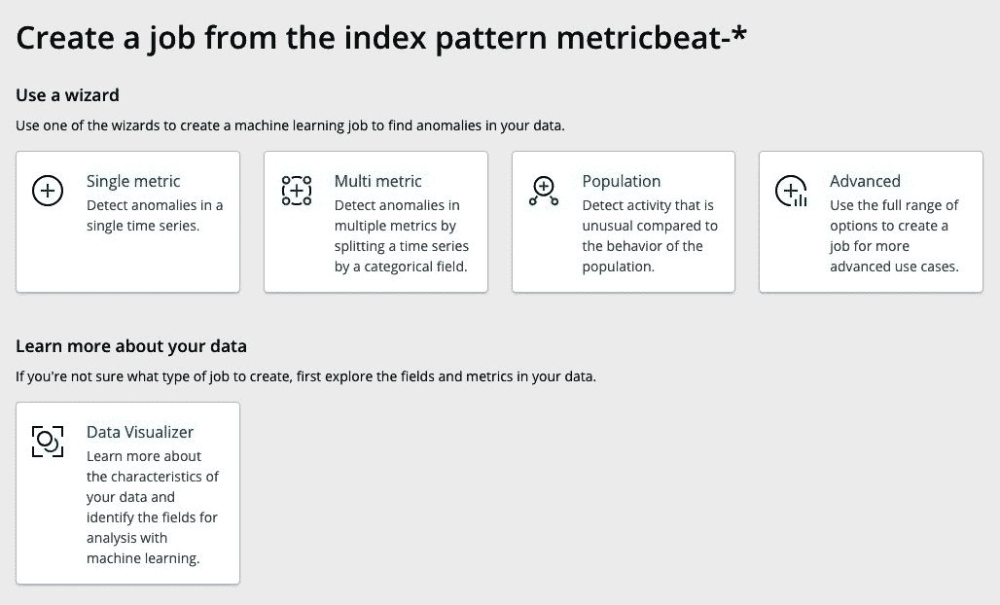
让我们花点时间来逐一了解一下。
数据可视化工具
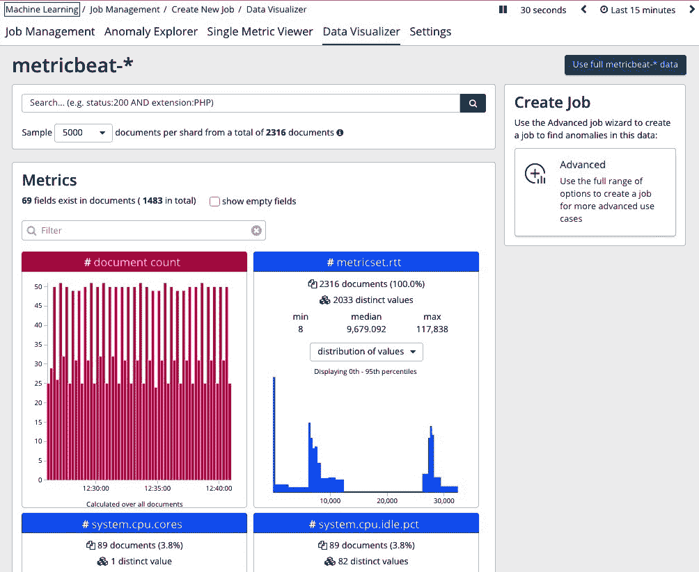
我们可以看到，使用 Data Visualizer 的直接好处是，它自动识别索引的哪些字段实际上是填充的(不是空的)，并且还让用户能够查看每个字段的最高值(或值的分布)。当决定使用弹性 ML 分析哪些字段以及哪些字段可能要避免时，这些将会派上用场。例如，# system.cpu.cores 字段不太可能对使用 ML 进行分析有用，因为它始终只有一个不同的值。相反，# system.cpu.idle.pct 字段可能有助于使用 ML 进行分析。
We can see that the immediate benefits of using Data Visualizer is that it automatically identifies which fields of the index are actually populated (not empty) and also gives the user the ability to see the top values (or a distribution of values) of each field. These will come in handy when deciding which fields to analyze with Elastic ML and which ones to potentially avoid. For example, it is unlikely that the # system.cpu.cores field is useful to analyze with ML because it only has 1 distinct value for all time. Conversely, the # system.cpu.idle.pct field may be useful to analyze with ML.
单一度量作业
在单击单个指标图标后，让我们返回并再次开始创建 ML 作业:
我们现在看到了一个如下所示的屏幕:
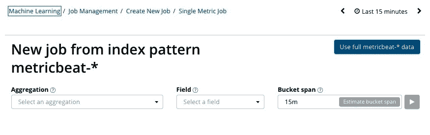
基本上，用户必须就如何配置分析做出一些选择:
选择一个聚合函数
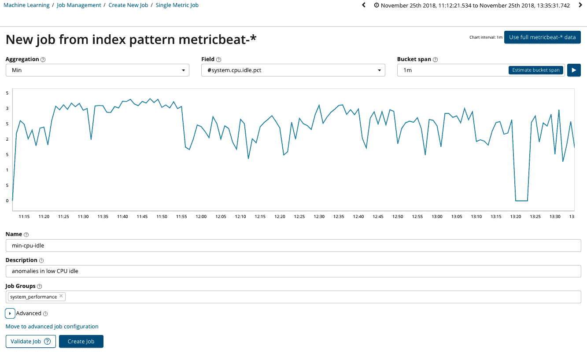
在命名作业并可选地为其提供纯文本描述并将其放入作业组(这在以后会很有用)之后，单击 Create Job 按钮将显示 ML 的运行视图:
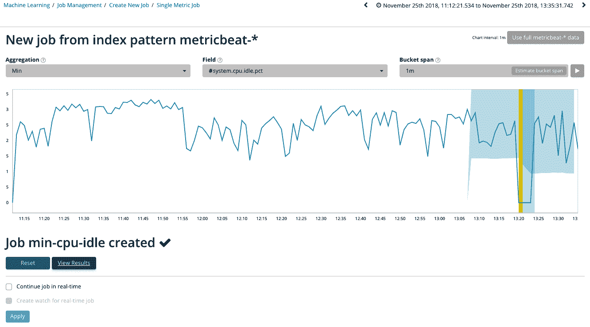
注意，您将开始在图表中看到一个蓝色区域，围绕着实际的数据值:这是这个数据集的 ML 模型的可视化表示。在这个具体的例子中，模型直到数据集的最后一部分才开始着色，这是因为，实际上，这个数据集上还没有足够的历史记录(我们可以让 Metricbeat 先收集更多的数据)。但是尽管如此，ML 确实正确地识别出了 CPU 空闲百分比下降的时刻(用一个垂直的黄色条)。
作为本章的补充说明，在运行作业后，系统会询问您是要继续实时运行作业，还是要为实时作业创建一个观察器(警报)，如以下屏幕所示:
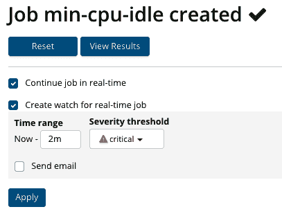
您可以启用这两个选项。第一个选项让我们的 ML 分析在后台运行，以便实时检测 CPU 利用率的异常。第二个选项与带警报的 ML 集成有关——我们将在本书后面回到这个主题。
单击查看结果按钮，进入单一指标查看器。
正如您将在图表中看到的，模型在看到数据的同时也在学习。如果您还没有太多要学习的数据，模型可能只会对实际数据集进行保守的粗略拟合:
As you will see on the chart, the model is learning as it sees data. If you don’t have much data to learn yet, the model may only make a conservative, rough fit around the actual dataset:
这是典型的。随着 Metricbeat 收集的数据越来越多，ML 看到的数据越来越多，模型将变得更加成熟，并将更准确地识别数据中的动态行为模式，如下图所示:
ML 模型将自动检测数据中的任何周期性。一个指标在白天和晚上的表现可能不同，或者在一周和周末的表现可能不同。因此，您提供给弹性 ML 的数据越多，模型就越稳定和准确。拥有大量历史数据有助于您快速构建一个可用于实时数据的模型，而无需长时间的等待。
尽管您的模型还不太成熟，但您可能会在分析中看到异常开始以不同颜色的点的形式出现在数据源上:
警告(蓝色):分数低于 25
根据过去对此指标的观察，此异常显示 CPU 的利用率高于正常水平(因为空闲时间较低)。我可以从位于单一指标查看器底部的表格中获得更多详细信息，如下面的屏幕截图所示:
请注意，这种异常情况的得分为 47，这是 CPU 测量的实际值与发生时的 ML 模型预期值的概率评估的标准化版本，得分范围为 0 到 100。概率计算本身略低:0.001235；标准化异常分数成反比，评估为 47，轻微异常。请记住，异常评分是动态的，取决于数据及其历史。换句话说，没有规则说某个值的概率计算必须等于某个异常分数。
注意，这个分析没有显示此时哪个进程正在使用 CPU 的任何细节；我们选择将所有 CPU 测量值汇总成一个数字的方式，在设计上已经失去了这种详细程度。如果我们想得到这个细节，我们需要在每个进程的基础上分离或拆分 CPU 测量。这正是多度量作业派上用场的确切情况。
多度量作业
如前所述，多指标作业非常有助于同时将分析拆分为多个单独的指标。在我们的示例中，我们希望了解每个进程的 CPU 利用率。这将引导我们更准确地分析我们的机器出了什么问题，并立即了解哪个进程是问题的原因。
为此，创建一个新的多指标作业，其中首先要选择要包含在分析中的数据的字段或数字要素，如以下屏幕截图所示:
您应该只使用相对较低基数的分类字段来分割分析。
您还可以选择您认为可能有用的关键字段(影响因素),以了解它们是否会影响异常的创建。默认情况下，至少会自动选择用于分割数据的字段，但您也可以选择其他字段。
这里我没有使用任何其他影响因素，我们将按原样运行分析。如果您单击查看结果按钮，您将被重定向到异常浏览器页面。这与之前的可视化不同，因为现在我们能够一次查看多个实体的异常情况:
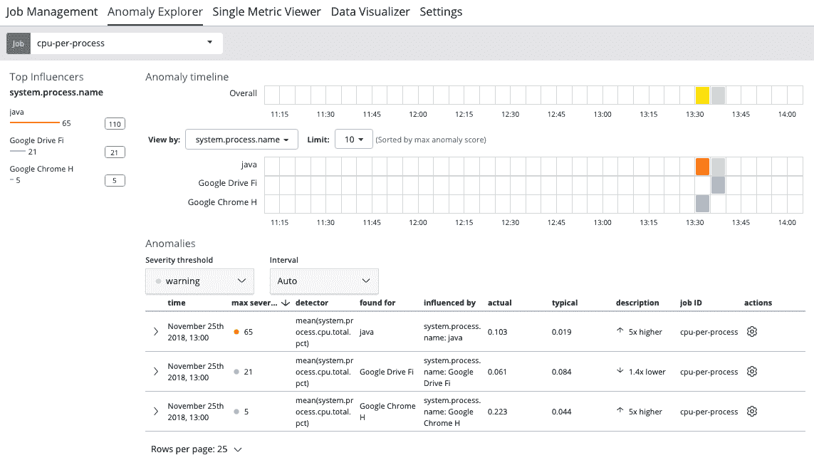
You can also pick Key Fields (Influencers) that you think might be useful to know whether they impact on the creation of an anomaly. By default, at least the field used to split the data is automatically selected, but you can also choose other fields.
异常浏览器页面由前面屏幕截图右中的热图、左侧的影响者列表和详细信息表组成，就像在单个指标查看器中一样。
我的示例中的热图包含源数据中每个分区的一行；有一个选择器来限制热图中的行数——这里的每一行都代表所查看的时间段内最异常的过程(异常分数最高的过程)。
如果我单击热图中的给定方块以获得异常的详细信息，我将获得与在单一指标查看器中几乎相同的体验，只是不会绘制模型边界，如下面的屏幕截图所示:
在我的例子中，Java 进程显然比过去使用了更多的 CPU(五倍多)。“异常浏览器”页面非常方便地让您先睹为快地了解顶级 n 实体中的异常情况，但是如果我想查看给定流程的分析，我可以单击“操作”齿轮下的“查看系列”菜单项:
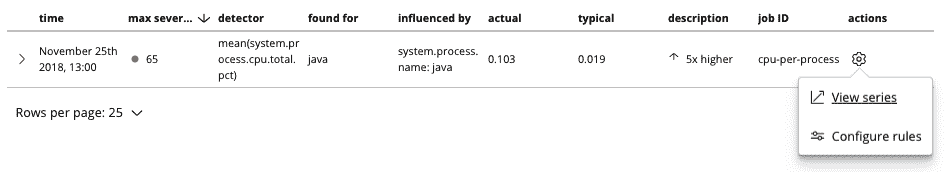
这将把我们带回感兴趣的流程的单个指标查看器(在本例中为java):
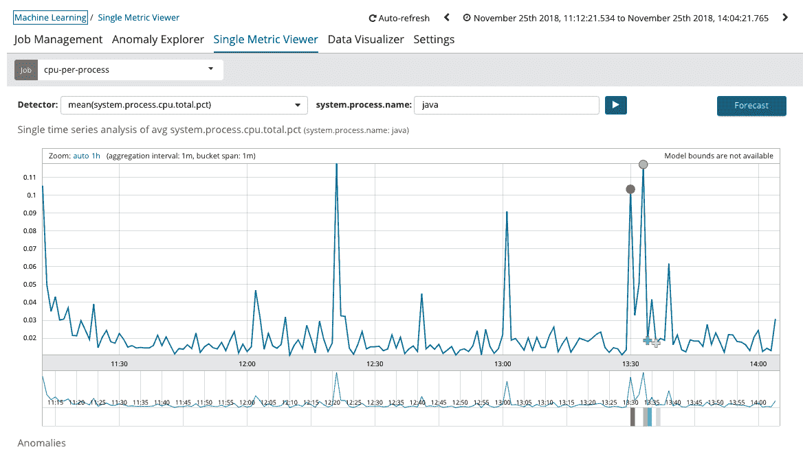
多指标作业允许我们将分析分成多个并行分析。但是，如果我们想通过相互比较来分析实体，而不是通过它们自己的历史来分析，那该怎么办呢？为此，我们将利用人口工作类型。
This will bring us back to the Single Metric Viewer for the process of interest (in this case, java):
人口工作
选择填充作业向导将使我们能够相互比较实体。如果我们期望大多数实体行为相似，并且我们想要找到异常行为的情况，这可能特别有用。当在所有时间内单独为每个实体建模不切实际时，它也很方便，因为要么实体的行为很稀疏(来来去去)，要么实体的总数太大，以至于在给定有限的计算空间的情况下单独为它们建模是不切实际的。
因此，我们可以想象一个用例，在这个用例中，我们希望找到比我们系统上的典型进程使用更多 CPU 的进程。要创建此作业，请选择填充作业向导，并选择如下屏幕截图所示的内容:
Selecting the Population job wizard will enable us to compare entities against each other. This can be especially useful if we expect most entities to behave similarly, and we want to find cases of outlier behavior. It is also handy when it is impractical to individually model every entity over all time, because either the entity's behavior is sparse (comes and goes) or the total number of entities is so large that modeling them individually is impractical given a finite amount of compute space.
这里，我们已经指定 tsystem.process.name 是定义填充的字段；系统上运行的所有进程将根据它们的行为相互竞争——具体来说，根据所利用的 CPU 数量(这里，我们选择 system.process.cpu.total.pct 字段的较高平均值。请注意，tbeat.hostname 也被选为候选影响者。我们会看到结果是怎样的。
运行此作业会产生以下示例结果:
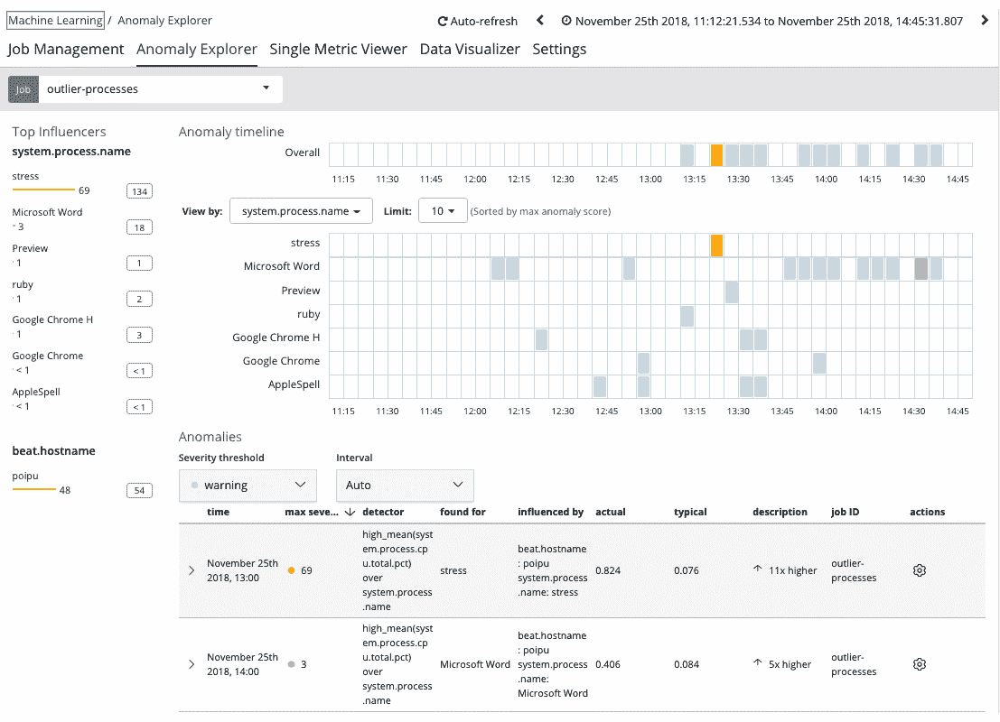
我们可以看到，进程压力异乎寻常地占据了 CPU(比典型进程高 11 倍)。此外，我们看到 poipu 主机名对这种异常有影响。换句话说，这是运行名为 stress 的进程的机器名——尽管它不是实际异常检测本身的一部分，但还是很容易被发现！
Running this job gives the following example results:
压力进程是一个免费的实用程序，可用于对系统施加压力。在本例中，它被手动用于制造数据中的异常。
如果我们单击热图中与我们的异常过程相关的方块，我们可以看到详细信息:
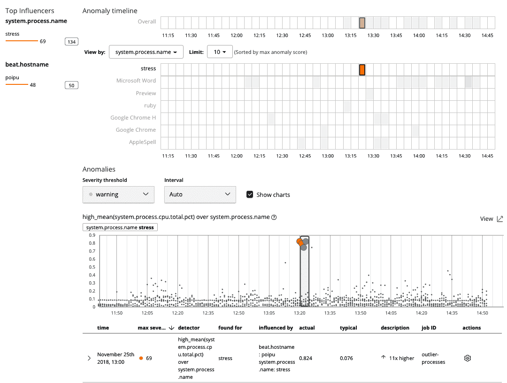
请注意，这种可视化与多指标作业略有不同。它在其他实体的行为样本的上下文中显示该实体的样本，以便我们可以更直观地判断一个实体与其同行相比不寻常的原因。
If we click on the square in the heat map associated with our anomalous process, we can see the details:
高级作业
高级作业允许我们对他们如何运行分析有更多的控制。然而，它们并不是一种新的工作。所有 ML 作业，无论使用哪个向导创建它们，都会产生一个通用的作业配置定义。只是有些向导针对特定的工作应用进行了优化。然而，使用高级作业向导配置作业确实使您能够控制几乎每一个方面(使用下一节中讨论的 API，可以访问每一个可能的方面)。
因此，我们现在不会过多讨论高级作业向导，但我们将在本书后面的其他示例中利用它。
就像弹性堆栈中的几乎所有东西一样，ML 也可以通过 API 调用完全自动化——包括作业配置、执行和结果收集。实际上，您在 Kibana UI 中的所有交互都在幕后利用 ML API。例如，如果有您想要的特定工作流或可视化，您可以完全编写自己的 UI。
有关 API 的更多深入信息，请参考https://www . elastic . co/guide/en/elastic search/reference/current/ml-APIs . html。在这一部分中，我们不会详细讨论每一个问题，但是我们想强调一些值得绕道的部分。
前面的 JSON 包含了我们通过 click experience 传递给 Kibana 的所有配置，因此它完全等同于我们在 UI 中创建的内容。如果将此消息发送到端点，您将获得以下 JSON 响应:
For more in-depth information about the APIs, please refer to https://www.elastic.co/guide/en/elasticsearch/reference/current/ml-apis.html. We won't go into each one of them in this part, but we would like to highlight some parts that are worth a detour.
请注意，在创建作业时,job_id字段需要是唯一的。
PUT _xpack/ml/anomaly_detectors/my_cpu_job
{
"description":"Processes that use more CPU than others",
"analysis_config":{
"bucket_span":"15m",
"detectors":[
{
"detector_description":"high mean CPU",
"function":"high_mean",
"field_name":"system.process.cpu.total.pct",
"over_field_name":"system.process.name"
}
],
"influencers":[
"system.process.name",
"beat.hostname"
]
},
"data_description":{
"time_field":"@timestamp",
"time_format":"epoch_ms"
}
}
值得注意的是，作业还需要配置为知道要分析原始数据的哪个索引，以及需要针对该索引执行哪个查询。这是datafeed配置的一部分，通过位于https://www . elastic . co/guide/en/elastic search/reference/current/ml-put-data feed . html的文档进行设置。
{
"job_id" : "my_cpu_job",
"job_type" : "anomaly_detector",
"job_version" : "6.5.1",
"description" : "Processes that use more CPU than others",
"create_time" : 1543197011209,
"analysis_config" : {
"bucket_span" : "15m",
"detectors" : [
{
"detector_description" : "high mean CPU",
"function" : "high_mean",
"field_name" : "system.process.cpu.total.pct",
"over_field_name" : "system.process.name",
"detector_index" : 0
}
],
"influencers" : [
"system.process.name",
"beat.hostname"
]
},
"analysis_limits" : {
"model_memory_limit" : "1024mb",
"categorization_examples_limit" : 4
},
"data_description" : {
"time_field" : "@timestamp",
"time_format" : "epoch_ms"
},
"model_snapshot_retention_days" : 1,
"results_index_name" : "shared"
}
为名为my_cpu_job的作业配置datafeed的请求示例如下:
回应如下:
注意，默认的索引查询是match_all，这意味着不会进行过滤。当然，我们可以在查询块中插入任何有效的 Elasticsearch DSL 来执行定制的过滤或聚合。这一概念将在本书的后面介绍。
还有其他 API 可用于提取结果或修改 ML 作业的其他操作方面。有关更多信息，请参考在线文档。
PUT _xpack/ml/datafeeds/datafeed-my_cpu_job
{
"job_id" : "my_cpu_job",
"indexes" : [
"metricbeat-*"
]
}
The response would be as follows:
{
"datafeed_id" : "datafeed-my_cpu_job",
"job_id" : "my_cpu_job",
"query_delay" : "106392ms",
"indices" : [
"metricbeat-*"
],
"types" : [ ],
"query" : {
"match_all" : {
"boost" : 1.0
}
},
"scroll_size" : 1000,
"chunking_config" : {
"mode" : "auto"
}
}
Notice that the default query to the index is match_all, which means that no filtering will take place. We could, of course, insert any valid Elasticsearch DSL in the query block to perform custom filters or aggregations. This concept will be covered later in the book.
摘要
此时，您应该已经安装了 Elastic ML，并对如何使用它在 Elasticsearch 中实时分析数据有了相当的了解。在下一章， 第 3 章，事件变化检测你将开始学习有效使用 ML 解决各种新用例的额外方法。
At this point, you should have installed Elastic ML and have a decent understanding of how to use it to analyze data in real time in Elasticsearch. In the next chapter, Chapter 3, Event Change Detection you will start learning additional ways to effectively use ML to solve a variety of new use cases.